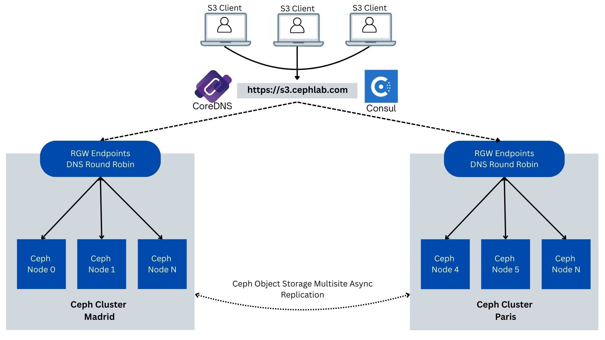
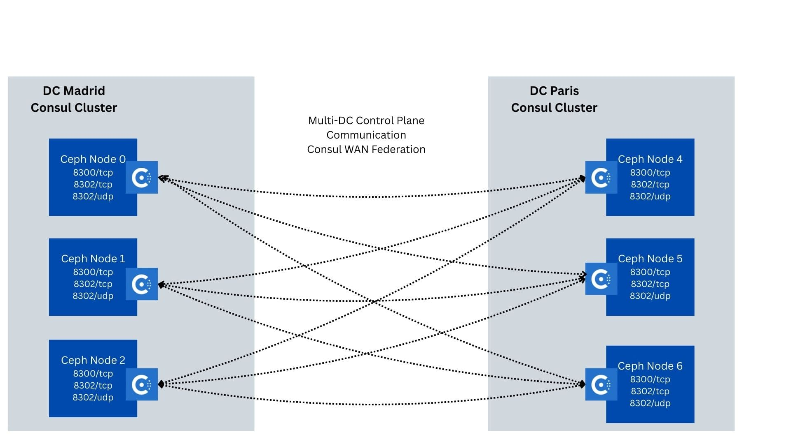
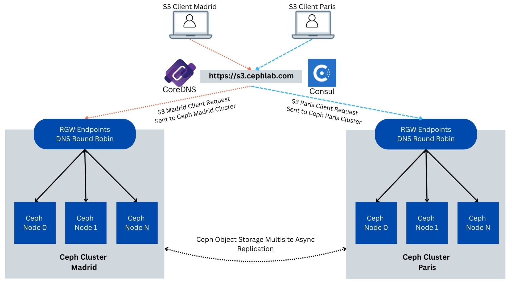
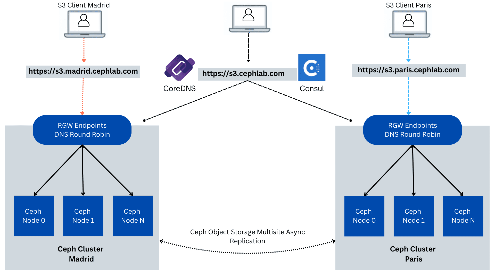

Part3. Consul-Powered Global Load Balancing for Ceph Object Gateway (RGW)


Part3. Consul-Powered Global Load Balancing for Ceph Object Gateway (RGW) ¶
Note: this series of articles describes functionality that is expected to be available an upcoming Tentacle dot release.
Introduction ¶
In Parts one and two of the series, we built local, per-data-center health-aware load balancing for the Ceph Object Gateway (RGW) using cephadm ingress terminators, Consul service discovery, and CoreDNS rewrites.
In Parts three and four, we combine Ceph Object Multisite (active/active data replication between Madrid and Paris Data Centers) with a Consul global load-balancing control plane, ensuring that the single S3 endpoint always routes to the closest healthy ingress and fails over across sites when needed, without requiring any client URL or SDK changes. Each site remains independent (its own control plane and Ceph cluster), while co-operating over the WAN so client requests always land on a healthy site.
In this post, we start with a clear architecture walkthrough of how data replication, per-node ingress, and a service-aware control plane fit together for GLB. Then we stand up Consul WAN federation (one datacenter per site) and define a single shared S3 prepared query that encodes our policy: prefer local, fall back to the peer only if necessary. We’ll validate the behavior end-to-end via the Consul API and Consul DNS on port 8600 (no client-facing DNS changes yet), and close with a few operational hardening notes.
High-Level Architecture Overview ¶
This solution combines three layers so clients can reach the Ceph Object Gateway (RGW) reliably from either site. First, Ceph Object Multisite keeps data replicated and available in both locations. We run one zonegroup named Europe with two zones, Madrid and Paris. Objects replicate in both directions (active/active for data). The metadata replication is coordinated at the zonegroup master (active/passive for metadata such as buckets and users). This means either site can serve object reads and writes; metadata changes are made at the master and then propagated to the peer.
Second, cephadm ingress terminators place an HAProxy in front of the RGWs on every node. Requests that reach a site are handled locally by that site’s HAProxy and RGWs, which improves performance and removes single points of failure inside the site.
Third, service-aware DNS steers clients to healthy entry points. Each site runs Consul and CoreDNS. Consul continuously checks the health of each HAProxy and keeps a catalog of which ones are available in that site. The two Consul data centers are connected over the WAN, so during a problem, a site can request healthy endpoints from its peer. CoreDNS presents a standard DNS interface on TCP port 53 for your domain (for example, cephlab.com). It rewrites the public name s3.cephlab.com to an internal Consul lookup, forwards the question to the local Consul DNS, then rewrites the answers back. Applications continue to use a stable URL while the system quietly selects healthy gateways.

At a high level, the workflow is simple:
- A client resolves
s3.cephlab.comusing the nearest CoreDNS (each site runs three instances for high availability). - CoreDNS rewrites the request to a Consul prepared query and forwards it to the local Consul on TCP port
8600. - Consul returns only healthy HAProxy IP addresses from the local site; if none are healthy, it returns healthy IP addresses from the peer site.
- The client connects to one of those IPs on port:
8080, and the local HAProxy forwards the request to its local RGW. - Multisite ensures the object data is present in both sites and that metadata remains consistent by way of the zonegroup master.
Ceph Replication Consistency & Replication Semantics ¶
As noted earlier, this lab uses an active/active model for object data: clients can write to either site. Replication between sites is asynchronous (eventually consistent), so you should expect brief propagation delays and plan for the resulting trade-offs. The following section outlines the key considerations for clients/applications consuming the S3 API.
- Write conflicts: For non-versioned buckets, concurrent writes to the same key from different sites resolve as last-writer-wins (the most recent update overwrites the earlier one once replication completes). If you enable bucket versioning, versions are preserved, but the “current” version you see is still the latest committed update.
- Cross-site reads after writes: Because replication is async, a client in Site A may not immediately see a write performed in Site B. If you need stronger, read-your-writes behavior across sites, consider one or more of these patterns:
- Prefer a single writer per key (or route all writes for a dataset to one site) and let others read.
- Enable bucket versioning and read by version ID when correctness matters.
- Use conditional requests (e.g., If-Match with a known ETag) and application retry logic with backoff/jitter until the expected object/version is visible.
- Keep client affinity (stick clients to their nearest DC) to minimize cross-site read-after-write gaps.
If your application, workload, or use case doesn’t fit the active/active model, Ceph Object Multisite can be configured in active/passive mode. In this layout, a preferred site serves all client requests by default, and the secondary site remains on standby, only taking client requests if the primary site becomes unavailable.
Multi-DC Consul Control Plane (WAN federation) ¶
When you run Consul at two sites, you create one Consul data center per site. Each data center has its own set of servers that elect a leader and store their catalog in a local Raft database. Within a site, the agents communicate over the LAN. Between sites, a designated number of servers also open a WAN link so the two data centers can see each other and cooperate. The key idea is separation with controlled sharing: day-to-day lookups stay local for speed and containment, yet the system can deliberately reach across the WAN when the local site cannot serve traffic.
When setting up a multi-datacenter Consul cluster, operators must ensure that all Consul servers in every datacenter are directly reachable at their WAN-advertised network address from each other, as this can be cumbersome and problematic from a security standpoint. Operators looking to simplify their WAN deployment and minimize the exposed security surface area can elect to join these data centers together using mesh gateways to achieve this.

In this model, catalogs and health states are independent per site. You do not merge sites into a single cluster. Instead, you run two clusters that trust each other over the WAN. This keeps failure domains small and makes it clear which site is healthy at any moment. Cross‑site behavior (for example, returning endpoints from the other site when none are healthy locally) is an intentional policy we will apply later.
Prepared Queries: execution model and GLB policy ¶
A prepared query is a Consul object that describes how to answer a lookup for a service. It selects a service by name (for example, ingress-rgw-s3), filters to healthy instances, and applies a policy that can prefer local endpoints and, if necessary, fall back to other sites. Prepared queries are stored in Consul’s Raft state and exposed over DNS.
Each prepared query has a DNS record of the form <name>.query.consul. and executes queries in the data center you specify, which is usually the local site. You can also force execution in a specific site by using <name>.query.<datacenter>.consul.. This indirection lets us keep hostnames stable while steering where the decision is made.
Where evaluation happens, a query executes in the datacenter of the Consul DNS server that receives the question. That site returns only instances that are registered and passing health checks. If there are none, the query can consult its failover data centers list and return healthy endpoints from the appropriate site/DC in the list.
CoreDNS in the GLB architecture ¶
CoreDNS sits in front of Consul and provides the DNS interface on port 53. We run three CoreDNS instances per datacenter for high availability; each DC has its own set of nameservers (NS) addresses, and both sets are published as NS for the internal stub zone (for example, a delegated subdomain such as s3.cephlab.com) so resolvers can reach either site even if one is offline. Each CoreDNS serves a small zone file for your subdomain and forwards the special .consul domain to the local Consul DNS on TCP port 8600. When a client looks up the global name s3.cephlab.com, CoreDNS rewrites it to the internal prepared‑query form (s3.query.consul.to execute locally), forwards the question to Consul, and rewrites the answers back. Hence, applications and SDKs see a stable URL.

We also expose pinned per‑site names, such as s3.madrid.cephlab.com and s3.paris.cephlab.com, which forces the client request to one site or the other while still retaining failover if that site is unhealthy. This arrangement gives you resilient DNS across sites, locality by default, deterministic routing when you need it, straightforward latency/compliance testing, and seamless cross‑site failover driven by Consul health checks.

Hands-On. Consul Deployment and Setup ¶
Pre-Configured assets ¶
- Two sites (data centers): Madrid and Paris.
- Madrid servers:
ceph-node-00 (192.168.122.12),ceph-node-01 (192.168.122.179),ceph-node-02 (192.168.122.94). - Paris servers:
ceph-node-04 (192.168.122.138),ceph-node-05 (192.168.122.175),ceph-node-06 (192.168.122.214). - Cephadm ingress is deployed with HAProxy concentrators on each RGW host; each host monitors local RGWs on TCP port
1967and fronts S3 on8080. check out part one of our blog series for detailed steps on setting up this configuration. - Ceph Object Multisite Replication is configured between the sites. You can check out our Ceph Multisite Async Replication blog series to get the steps for this configuration.
- The Ceph Object Multisite Zonegroup configuration includes the following subdomains as a comma-separated list in the hostnames section:
s3.cephlab.com,s3.madrid.cephlab.com, s3.paris.cephlab.com.
Consul: Server Agents ¶
Before wiring up queries and DNS, we run the Consul server agents as cephadm‑managed containers on each site’s three server nodes. Running under cephadm gives you lifecycle management (placement, health, restart) consistent with the rest of the cluster and, critically, keeps state persistently across restarts.
Each container bind‑mounts:
/etc/consul.dfor configuration files:consul.hcl/opt/consulfor Consul’s Raft data directory, mapped to the host’s/var/lib/consul. This holds the catalog, leader election state, and prepared queries so they survive container restarts and node reboots.
Consul Configuration and Setup ¶
Create the consul.hcl config file for the Madrid DC.
Place it at /etc/consul.d/consul.hcl` on each Madrid node, customizing thebind_addrand the check URL per host. This file is per-node and values differ; do notscp`` the same file to all nodes without editing. Templating via Ansible or a similar tool works well for this.
ceph-node-00# mkdir -p /etc/consul.d /var/lib/consul
ceph-node-00# cat >/etc/consul.d/consul.hcl <<'EOF'
datacenter = "madrid"
data_dir = "/opt/consul"
bind_addr = "192.168.122.12"
client_addr = "0.0.0.0"
retry_join = [
"192.168.122.12",
"192.168.122.179",
"192.168.122.94"
]
retry_join_wan = [
"192.168.122.138",
"192.168.122.175",
"192.168.122.214"
]
server = true
bootstrap_expect = 3
enable_local_script_checks = true
services = [
{
name = "ingress-rgw-s3"
port = 8080
check = {
id = "http-check"
name = "HAProxy Check"
http = "http://192.168.122.12:1967/health"
interval = "10s"
timeout = "2s"
}
tags = ["region:eu", "site:mad"]
}
]
EOF
Create the consul.hcl config file for the Paris DC (adjust per node):
ceph-node-04# mkdir -p /etc/consul.d /var/lib/consul
ceph-node-04# cat >/etc/consul.d/consul.hcl <<'EOF'
datacenter = "paris"
data_dir = "/opt/consul"
bind_addr = "192.168.122.138"
client_addr = "0.0.0.0"
retry_join = [
"192.168.122.138",
"192.168.122.175",
"192.168.122.214"
]
retry_join_wan = [
"192.168.122.12",
"192.168.122.179",
"192.168.122.94"
]
server = true
bootstrap_expect = 3
services = [
{
name = "ingress-rgw-s3"
port = 8080
check = {
id = "http-check"
name = "HAProxy Check"
http = "http://192.168.122.138:1967/health"
interval = "10s"
timeout = "2s"
}
tags = ["region:eu", "site:paris"]
}
]
EOF
Below is the cephadm service spec for Consul services in Madrid. We create the cephadm spec file and then apply the configuration with ceph orch apply.
ceph-node-00# cat >consul-madrid.yml <<'EOF'
service_type: container
service_id: consul
placement:
hosts:
- ceph-node-00
- ceph-node-01
- ceph-node-02
spec:
image: docker.io/hashicorp/consul:latest
entrypoint: '["consul", "agent", "-config-dir=/consul/config"]'
args:
- "--net=host"
ports:
- 8500
- 8600
- 8300
- 8301
- 8302
bind_mounts:
- ['type=bind','source=/etc/consul.d','destination=/consul/config', 'ro=false']
- ['type=bind','source=/var/lib/consul','destination=/opt/consul','ro=false']
EOF
ceph-node-00# ceph orch apply -i consul-madrid.yml
ceph-node-00# ceph orch ps --daemon_type container | grep consul
container.consul.ceph-node-00 ceph-node-00 *:8500,8600,8300,8301,8302 running (2m) 2m ago 28.1M - <unknown> ee6d75ac9539 cc2c232e59a3
container.consul.ceph-node-01 ceph-node-01 *:8500,8600,8300,8301,8302 running (2m) 2m ago 23.0M - <unknown> ee6d75ac9539 5127481b0f0a
container.consul.ceph-node-02 ceph-node-02 *:8500,8600,8300,8301,8302 running (2m) 2m ago 23.4M - <unknown> ee6d75ac9539 b39d3f904579
ceph-node-00# podman exec -it $(podman ps | awk '/consul/ {print $1; exit}') consul members
Node Address Status Type Build Protocol DC Partition Segment
ceph-node-00 192.168.122.12:8301 alive server 1.21.4 2 madrid default <all>
ceph-node-01 192.168.122.179:8301 alive server 1.21.4 2 madrid default <all>
ceph-node-02 192.168.122.94:8301 alive server 1.21.4 2 madrid default <all>
Below is the cephadm service spec for Consul services in Paris. We follow the same steps in our Paris Ceph Cluster.
ceph-node-04# cat >consul-paris.yml <<'EOF'
service_type: container
service_id: consul
placement:
hosts:
- ceph-node-04
- ceph-node-05
- ceph-node-06
spec:
image: docker.io/hashicorp/consul:latest
entrypoint: '["consul", "agent", "-config-dir=/consul/config"]'
args:
- "--net=host"
ports:
- 8500
- 8600
- 8300
- 8301
- 8302
bind_mounts:
- ['type=bind','source=/etc/consul.d','destination=/consul/config', 'ro=false']
- ['type=bind','source=/var/lib/consul','destination=/opt/consul','ro=false']
EOF
ceph-node-04# ceph orch apply -i consul-paris.yml
ceph-node-04# ceph orch ps --daemon_type container | grep consul
container.consul.ceph-node-04 ceph-node-04 *:8500,8600,8300,8301,8302 running (2m) 2m ago 22.9M - <unknown> ee6d75ac9539 a1b2c3d4e5f6
container.consul.ceph-node-05 ceph-node-05 *:8500,8600,8300,8301,8302 running (2m) 2m ago 23.1M - <unknown> ee6d75ac9539 b2c3d4e5f6a1
container.consul.ceph-node-06 ceph-node-06 *:8500,8600,8300,8301,8302 running (2m) 2m ago 23.0M - <unknown> ee6d75ac9539 c3d4e5f6a1b2
ceph-node-04# podman exec -it $(podman ps | awk '/consul/ {print $1; exit}') consul members
Node Address Status Type Build Protocol DC Partition Segment
ceph-node-04 192.168.122.138:8301 alive server 1.21.4 2 paris default <all>
ceph-node-05 192.168.122.175:8301 alive server 1.21.4 2 paris default <all>
ceph-node-06 192.168.122.214:8301 alive server 1.21.4 2 paris default <all>
Validate that the Consul WAN federation is set up and working:
ceph-node-00# podman exec -it $(podman ps | awk '/consul/ {print $1; exit}') consul members -wan
Node Address Status Type Build Protocol DC Partition Segment
ceph-node-00.madrid 192.168.122.12:8302 alive server 1.21.4 2 madrid default <all>
ceph-node-01.madrid 192.168.122.179:8302 alive server 1.21.4 2 madrid default <all>
ceph-node-02.madrid 192.168.122.94:8302 alive server 1.21.4 2 madrid default <all>
ceph-node-04.paris 192.168.122.138:8302 alive server 1.21.4 2 paris default <all>
ceph-node-05.paris 192.168.122.175:8302 alive server 1.21.4 2 paris default <all>
ceph-node-06.paris 192.168.122.214:8302 alive server 1.21.4 2 paris default <all>
Consul Prepared GLB Query ¶
Create a prepared query named s3 in both data centers. This query is the GLB "brain": it asks Consul for endpoints of the ingress-rgw-s3 service, prefers local healthy instances, and, only when none are available/healthy, it falls back to the peer site/DC. The prepared S3 query JSON we will be using below sets a few essential knobs that we will explain:
Service.Service: the exact service name in the catalog (ingress-rgw-s3, as used in this guide). Change it if your service uses a different name.OnlyPassing: true: Return only instances whose health checks are passing. This is what makes DNS responsess health‑aware.Near: "_agent": Evaluate and sort results "near" the querying Consul agent; in practice, this means the local data center’s servers. This gives you locality by default.Failover: controls cross‑site behavior when there are no local passing instances.NearestN: 1means "prefer the nearest datacenter as a group".Datacenters: ["madrid","paris"]is the allowed failover set. If executed in Madrid and nothing is healthy locally, the Consul returns Paris endpoints; likewise, in Paris, it can return Madrid endpoints.DNS.TTL: "5s": Short TTLs ensure clients refresh quickly during failures and recoveries, minimizing unnecessary churn.
This single S3 query present at both sites, s3.query.consul, always executes at the site that receives the DNS query (local first, failover if needed).
Create the S3 query JSON file and load it into Consul on both sites using a POST request with cURL. We start with our Madrid site and ceph-node-00:
ceph-node-00# cat >/var/lib/consul/s3-query.json <<'EOF'
{
"Name": "s3",
"Service": {
"Service": "ingress-rgw-s3",
"OnlyPassing": true,
"Near": "_agent",
"Failover": { "NearestN": 1, "Datacenters": ["madrid","paris"] }
},
"DNS": { "TTL": "5s" }
}
EOF
ceph-node-00# curl -i -X POST -H 'Content-Type: application/json' \
--data-binary @/var/lib/consul/s3-query.json \
http://127.0.0.1:8500/v1/query
HTTP/1.1 200 OK
Content-Type: application/json
Vary: Accept-Encoding
X-Consul-Default-Acl-Policy: allow
Date: Thu, 28 Aug 2025 16:56:40 GMT
Content-Length: 45
{"ID":"d5ea3072-7975-3690-5b65-f8745bcc21a6"}
Then we do the same for our Paris DC Consul configuration:
ceph-node-04# cat >/var/lib/consul/s3-query.json <<'EOF'
{
"Name": "s3",
"Service": {
"Service": "ingress-rgw-s3",
"OnlyPassing": true,
"Near": "_agent",
"Failover": { "NearestN": 1, "Datacenters": ["madrid","paris"] }
},
"DNS": { "TTL": "5s" }
}
EOF
ceph-node-04# curl -i -X POST -H 'Content-Type: application/json' \
--data-binary @/var/lib/consul/s3-query.json \
http://127.0.0.1:8500/v1/query
HTTP/1.1 200 OK
Content-Type: application/json
Vary: Accept-Encoding
X-Consul-Default-Acl-Policy: allow
Date: Thu, 28 Aug 2025 17:06:11 GMT
Content-Length: 45
{"ID":"c94d7a90-3e5f-9de0-c966-99a04bd9eeed"}
In the following commands, we confirm the query was created and that resolution works end‑to‑end:
- Query the local Consul HTTP API to list prepared queries and check that the S3 query is present in Raft.
- Execute the S3 query from Madrid and inspect the results, retrieving a list of healthy HAproxy Concentrator endpoints from Madrid.
- Execute the prepared query over DNS (TCP port
8600) from Madrid and Paris to ensure it returns the local site’s passing the ingress IP addresses.
ceph-node-00# curl -s http://127.0.0.1:8500/v1/query | jq '.[].Name' | sort -u
"s3"
ceph-node-00# curl -s 'http://127.0.0.1:8500/v1/query/s3/execute' \
| jq '{Datacenter, Nodes: [.Nodes[] | {dc:.Node.Datacenter, ip:.Node.Address, svc:.Service.Service, port:.Service.Port}]}'
{
"Datacenter": "madrid",
"Nodes": [
{
"dc": "madrid",
"ip": "192.168.122.12",
"svc": "ingress-rgw-s3",
"port": 8080
},
{
"dc": "madrid",
"ip": "192.168.122.94",
"svc": "ingress-rgw-s3",
"port": 8080
},
{
"dc": "madrid",
"ip": "192.168.122.179",
"svc": "ingress-rgw-s3",
"port": 8080
}
]
}
ceph-node-00# dig -p 8600 @192.168.122.12 s3.query.consul A +short
192.168.122.12
192.168.122.179
192.168.122.94
ceph-node-00# dig -p 8600 @192.168.122.138 s3.query.consul A +short
192.168.122.138
192.168.122.175
192.168.122.214
Conclusion ¶
We now have a global control plane for the Ceph Object Gateway that stays true to data center boundaries: two independent Consul datacenters (Madrid, Paris) federated over the WAN, and a single prepared query (s3) defined in both. The query encodes our GLB policy, prefers local healthy ingress, and fails over to the peer only when necessary. We proved it works by executing it via the HTTP API and over Consul DNS on TCP port 8600. With this in place, the heavy lifting of "who should serve this request?" is solved without touching application URLs or centralizing state.
Next, in part 4, we’ll turn the Consul policy into a standard DNS experience. By running CoreDNS redundantly in each site (three per DC), the global name s3.cephlab.com always resolves to a healthy, nearby ingress by default. It automatically shifts to the other site if the local gateways aren’t available. We’ll also keep pinned per-site names (s3.madrid.cephlab.com, s3.paris.cephlab.com) for deterministic routing when needed (testing, compliance, troubleshooting).
The authors would like to thank IBM for supporting the community with our time to create these posts.